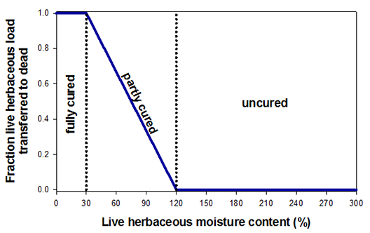

|
Fuel Load Transfer Portion |
Fuel load transfer portion is the percent or fraction of live herbaceous load that is transferred to the dead class. This variable only applies to dynamic standard or custom fuel models. The load transfer portion can either be calculated from live fuel moisture as described by Scott and Burgan (2005) or it can be entered directly.
See the Fuel Model Type for specifics about the load transfer equation.
| I/O | Module | If | Notes |
| Input | SURFACE | If Dynamic curing load transfer is input directly is selected as an input option. | |
| Output | SURFACE | If Dynamic curing load transfer is calculated from live herbaceous fuel moisture is selected as an input option. |
| Live herbaceous fuel moisture |
Fuel load transfer portion |
Curing |
|---|---|---|
| 120% | 0% | Uncured |
| 98% | 25% | One-quarter cured |
| 90% | 33.3% | One-third cured |
| 75% | 50% | One-half cured |
| 60% | 66.7% | Two-thirds cured |
| 53% | 75% | Three-quarters cured |
| 30% | 100% | Fully cured |
|  |